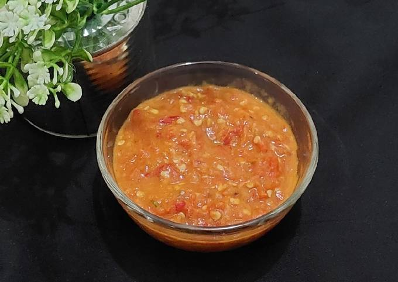

Sambal Seruit

Deskripsi
Sambal Seruit adalah makanan tradisional yang berasal dari Lampung, Indonesia.
Bahan-bahan
-
10 buah cabe rawit besar
-
5 buah cabe merah
-
1 buah tomat
-
1/4 buah jeruk nipis
-
3 siung bawang merah
-
1 sdt terasi
-
Secukupnya minyak untuk menggoreng bahan2 sambal
Langkah-langkah
-
Siapkan bahan
-
Terasi dibakar, sisihkan. Panaskan minyak lalu masukkan semua bahan kecuali terasi. Goreng dengan api kecil, sampai matang. Masukkan semua bahan yang sudah digoreng, juga terasi, garam dan gula pasir ke dalam chopper/blender
-
Haluskan. Oh ya kalau semuanya diulek lebih bagus. Nah sambal seruit khas Lampung sdh jadi. Siap disantap bersama nasi hangat dan lauknya